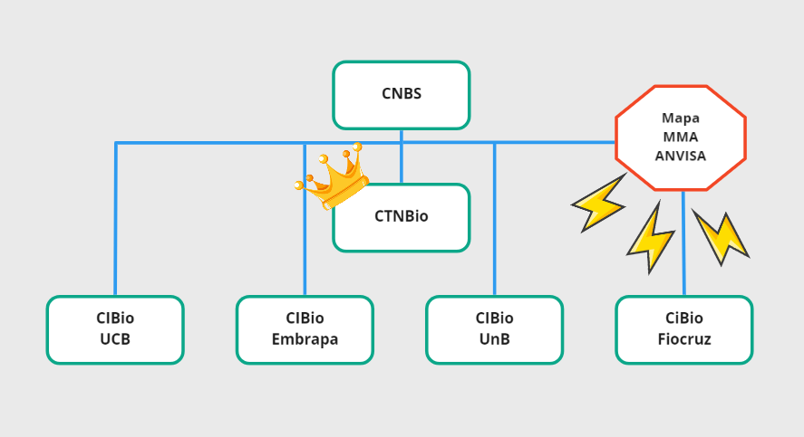
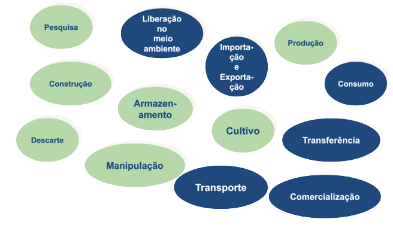

CIBio-FM UnB CQB XXXXX
Composição, conceitos, legislação e responsabilidades legais:
Objetivos do Curso

- Conhecer a composição da CIBio-FM UnB;
- Compreender o arcabouço regulatório envolvendo Biossegurança e Organismos Geneticamente Modificados (OGM);
- Conhecer as normas de biossegurança;
Comissão Interna de Biossegurança da Faculdade de Medicina - UnB
Quem pode desenvolver atividade envolvendo OGM?
Você não pode desenvolver atividades com OGM sozinho, em sua casa!

Composição CIBio-FM UnB CQB XXXXX
- Med. Vet. Ana Luíza Sarkis Vieira
- Presidente: Profa. Dra. Doralina do Amaral Rabello Ramos
- Profa. Dra. Fabíola Cristina Ribeiro Zucchi
- Prof. Dr. Hugo Costa Paes
- Profa. Dra. Juliana Forte Mazzeu de Araújo
- Profa. Dra. Juliana Lott de Carvalho
- Profa. Dra. Laila Salmen Espíndola
- Profa. Dra. Mariana Machado Hecht
O que é OGM e derivado de OGM?
Organismo cujo material genético – DNA/RNA tenha sido modificado por qualquer técnica de engenharia genética.
O que é derivado de OGM?
O produto obtido de OGM e que não possua capacidade autônoma de replicação ou que não contenha forma viável de OGM.
Trabalho com Organismos Geneticamente Modificados
Todas as atividades envolvendo OGM são reguladas pela lei de biossegurança, no. 11.105, de 2005. Essa lei:
Organograma dos órgãos envolvidos no monitoramento das atividades envolvendo OGM no Brasil

- Modelo descentralizado;
- As CIBios devem enviar relatórios anuais à CTNBio, além de reportar eventuais acidentes;
- As CIBios são responsáveis por garantir a biossegurança envolvendo OGM no país;
Na UnB
- Há mais de uma CIBio;
- A CIBio-FM UnB CQB X acompanha apenas os laboratórios da FM que estão contemplados no CQB;
- Atualmente, estes laboratórios são XXXXX;
Papel da CIBio-FM CQB XXXXX
Autorizar, cadastrar e acompanhar as atividades de pesquisa com OGM (Nivel de Biossegurança NB1) ou derivado de OGM
em caso de OGM NB2 ou superior, encaminhar o projeto à CTNBio para apreciação e aprovação do projeto;
Todas as atividades envolvendo OGM citadas abaixo devem ser monitoradas pela CIBio
Portanto, apesar de acompanhar diretamente apenas os laboratórios vinculados ao CQB XXXXXX
a CIBio-FM UnB CQB XXXXX irá oferecer o treinamento de todos os usuários dos laboratórios da Faculdade de Medicina da UnB!
Comissão Técnica Nacional de Biossegurança (CTNBio)
Prerrogativa: Decisões técnicas sobre OGM e derivados e Decisão soberana sobre pesquisa!
Competência dos OERF
- Fiscalizar as atividades de pesquisa;
- Fiscalizar o cumprimento das normas e medidas de biossegurança;
- Estabelecer normas de registro, autorização, fiscalização e licenciamento ambiental;
- Registrar e fiscalizar a liberação comercial;
- Emitir autorização para a importação de OGM para uso comercial
Conselho Nacional de Biossegurança (CNBS)
- 11 membros:
- Presidente: Ministro de Estado Chefe da Casa Civil
- Ministro da Ciência e Tecnologia
- Ministro do Desenvolvimento Agrário
- Ministro da Agricultura, Pecuária e Abastecimento
- Ministro da Justiça
- Ministério da Saúde
- Ministro do Meio Ambiente
- Ministro do Desenvolvimento, Indústria e Comércio Exterior
- Ministro das Relações Exteriores
- Ministro da Defesa
- Secretário Especial de Aqüicultura e Pesca da Presidência da República
O Conselho Nacional de Biossegurança (CNBS) é vinculado a presiência da república, instância máxima, além disso possui princípios e diretrizes para ação nas questões de biossegurança. Toma decisões em relação a liberação comercial e se manifesta quando quer (6 ou mais membros), ou quando solicitado pela CTNBio ou órgãos de fiscalização.
Quais são as consequências de se desenvolver atividades envolvendo OGM em desobediência à legislação e à CIBio?
Exemplos de infrações administrativas
Realizar atividades de pesquisa e uso comercial de OGM e seus derivados sem autorização da CTNBio ou em desacordo com as normas por ela expedidas;
Deixar de manter registro do acompanhamento individual de cada atividade ou projeto de pesquisa envolvendo OGM;
Destruir ou descartar OGM no meio ambiente em desacordo com as normas da CTNBio e dos OERF.
Produzir, armazenar, transportar, comercializar, importar ou exportar OGM e seus derivados, sem autorização ou em desacordo com as normas estabelecidas pela CTNBio e pelos órgãos de registro e fiscalização.
Responsabilidades
Administrativa
Multas entre R$2.000,00 e R$1.500.000,00;
Civil
Indenizar/reparar danos;
Criminal
Tipificação de crimes e respectivas penas;
Gravidades x Multa
- Leve: R$ 2.000 a R$ 60.000
- Grave: R$ 60.001 a R$500.000
- Gravíssima: R$ 500.001 a R$1.500.000
Elementos de fiscalização de laboratórios de pesquisa
- Treinamento e uso de Equipamentos de Proteção Individual (EPI);
- Restrição de acesso ao laboratório;
- Classe de risco dos OGM em pesquisa;
- Nível de Biossegurança (1-4) e sinalização do risco biológico de cada área;
- Instalações utilizadas e habilitadas no CQB;
Análise dos documentos
Antes de iniciar suas atividades envolvendo OGM, cheque:
- Se o laboratório em que você desenvolverá suas atividades faz parte do CQB XXXXXXX CIBio-FM UnB;
- Se o projeto foi cadastrado/aprovado pela CIBio-FM UnB;
- Se você se lembra deste treinamento, ou se deverá repetí-lo;
- Se você conhece a composição da CIBio-FM UnB;
- Se o laboratório tem nível de biossegurança adequado para a atividade!
Objetivo da Fiscalização:

- Verificar o cumprimento da Lei;
- Monitorar o registro de atividades;
- Garantir um nível adequado de proteção nas atividades com OGM.